Extracting and visualizing tidy draws from rethinking models
Matthew Kay
2020-06-02
Source:vignettes/tidy-rethinking.Rmd
tidy-rethinking.RmdIntroduction
This vignette describes how to use the tidybayes.rethinking and tidybayes packages to extract tidy data frames of draws from posterior distributions of model variables, fits, and predictions from models fit in Richard McElreath’s rethinking package, the companion to Statistical Rethinking.
Because the rethinking package is not on CRAN, the code necessary to support that package is kept here, in the tidybayes.rethinking package. For a more general introduction to tidybayes and its use on general-purpose Bayesian modeling languages (like Stan and JAGS), see vignette(“tidybayes”, package = “tidybayes”).
While this vignette generally demonstrates use of tidybayes with models fit using rethinking::ulam() (models fit using Stan), the same functions also work for other model types in the rethinking package, including rethinking::quap(), rethinking::map(), and rethinking::map2stan(). For quap() and map(), the tidybayes functions will generate draws from the approximate posterior for you. This makes it easy to move between model types without changing your workflow.
Setup
The following libraries are required to run this vignette:
library(magrittr) library(dplyr) library(purrr) library(forcats) library(tidyr) library(modelr) library(tidybayes) library(tidybayes.rethinking) library(ggplot2) library(cowplot) library(rstan) library(rethinking) library(ggrepel) library(RColorBrewer) library(gganimate) theme_set(theme_tidybayes() + panel_border())
These options help Stan run faster:
rstan_options(auto_write = TRUE) options(mc.cores = parallel::detectCores())
Example dataset
To demonstrate tidybayes, we will use a simple dataset with 10 observations from 5 conditions each:
set.seed(5) n = 10 n_condition = 5 ABC = tibble( condition = factor(rep(c("A","B","C","D","E"), n)), response = rnorm(n * 5, c(0,1,2,1,-1), 0.5) )
A snapshot of the data looks like this:
head(ABC, 10)
## # A tibble: 10 x 2
## condition response
## <fct> <dbl>
## 1 A -0.420
## 2 B 1.69
## 3 C 1.37
## 4 D 1.04
## 5 E -0.144
## 6 A -0.301
## 7 B 0.764
## 8 C 1.68
## 9 D 0.857
## 10 E -0.931This is a typical tidy format data frame: one observation per row. Graphically:
ABC %>% ggplot(aes(y = fct_rev(condition), x = response)) + geom_point()
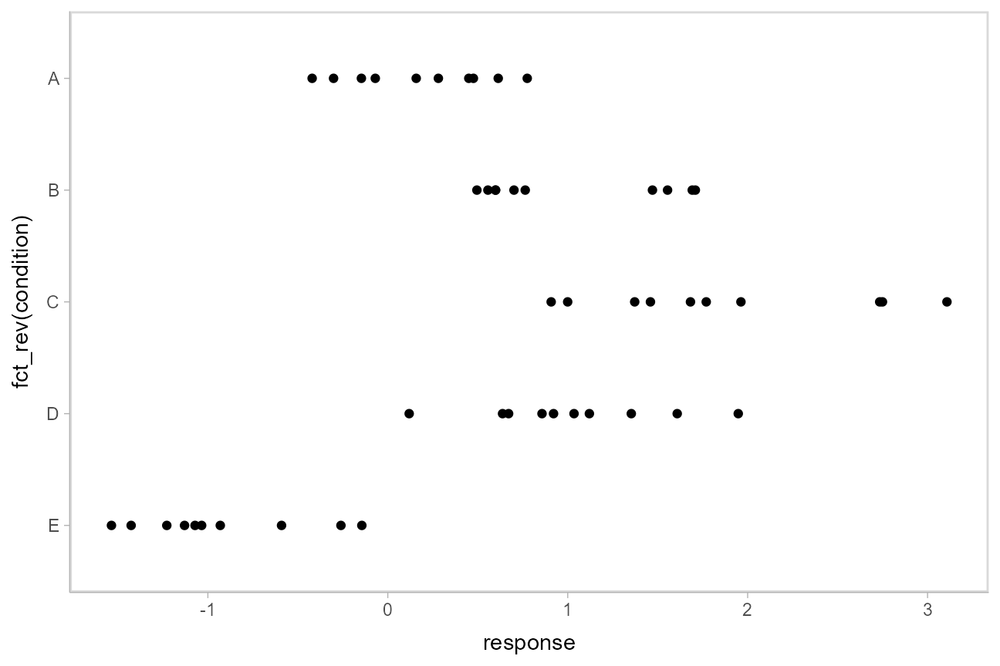
Model
Let’s fit a hierarchical linear regression model using Hamiltonian Monte Carlo (rethinking::ulam()). Besides a typical multilevel model for the mean, this model also allows the standard deviation to vary by condition:
m = ulam(alist( response ~ normal(mu, sigma), # submodel for conditional mean mu <- intercept[condition], intercept[condition] ~ normal(mu_condition, tau_condition), mu_condition ~ normal(0, 5), tau_condition ~ exponential(1), # submodel for conditional standard deviation log(sigma) <- sigma_intercept[condition], sigma_intercept[condition] ~ normal(0, 1) ), data = ABC, chains = 4, cores = parallel::detectCores(), iter = 2000 )
The results look like this:
summary(m)
## Inference for Stan model: 7355043b50daed42d51f903beb027f1d.
## 4 chains, each with iter=2000; warmup=1000; thin=1;
## post-warmup draws per chain=1000, total post-warmup draws=4000.
##
## mean se_mean sd 2.5% 25% 50% 75% 97.5% n_eff Rhat
## intercept[1] 0.19 0.00 0.15 -0.09 0.10 0.19 0.29 0.50 2709 1
## intercept[2] 1.00 0.00 0.19 0.61 0.89 1.00 1.12 1.37 3509 1
## intercept[3] 1.79 0.00 0.28 1.19 1.62 1.80 1.97 2.32 3219 1
## intercept[4] 1.02 0.00 0.19 0.64 0.90 1.02 1.14 1.39 3000 1
## intercept[5] -0.90 0.00 0.17 -1.21 -1.00 -0.90 -0.79 -0.54 2878 1
## mu_condition 0.62 0.01 0.58 -0.53 0.29 0.61 0.95 1.76 1827 1
## tau_condition 1.19 0.01 0.47 0.60 0.87 1.08 1.39 2.44 2309 1
## sigma_intercept[1] -0.81 0.00 0.24 -1.23 -0.98 -0.83 -0.66 -0.28 3028 1
## sigma_intercept[2] -0.57 0.00 0.24 -0.99 -0.75 -0.58 -0.41 -0.05 3341 1
## sigma_intercept[3] -0.20 0.00 0.25 -0.62 -0.37 -0.22 -0.06 0.33 3109 1
## sigma_intercept[4] -0.56 0.00 0.24 -0.99 -0.73 -0.58 -0.41 -0.04 2981 1
## sigma_intercept[5] -0.67 0.00 0.25 -1.09 -0.84 -0.69 -0.52 -0.12 3377 1
## lp__ -0.81 0.07 2.65 -6.93 -2.39 -0.39 1.15 3.22 1468 1
##
## Samples were drawn using NUTS(diag_e) at Tue Jun 02 11:56:26 2020.
## For each parameter, n_eff is a crude measure of effective sample size,
## and Rhat is the potential scale reduction factor on split chains (at
## convergence, Rhat=1).
Extracting draws from a fit in tidy-format using spread_draws
Extracting model variable indices into a separate column in a tidy format data frame
Now that we have our results, the fun begins: getting the draws out in a tidy format! The default methods in rethinking for extracting draws from the model do so in a nested format:
str(rethinking::extract.samples(m))
## List of 4
## $ intercept : num [1:4000, 1:5] 0.0518 0.5825 0.0642 0.1052 0.1779 ...
## $ mu_condition : num [1:4000(1d)] -0.2364 0.743 0.9528 0.0011 0.8269 ...
## $ tau_condition : num [1:4000(1d)] 1.76 0.787 1.335 1.609 0.865 ...
## $ sigma_intercept: num [1:4000, 1:5] -1.057 -0.831 -0.971 -0.203 -1.048 ...
## - attr(*, "source")= chr "ulam posterior: 4000 samples from m"The spread_draws() function yields a common format for all model types supported by tidybayes. It lets us instead extract draws into a data frame in tidy format, with a .chain and .iteration column storing the chain and iteration for each row (if available—these columns are NA for rethinking::quap() and rethinking::map() models), a .draw column that uniquely indexes each draw, and the remaining columns corresponding to model variables or variable indices. The spread_draws() function accepts any number of column specifications, which can include names for variables and names for variable indices. For example, we can extract the intercept variable as a tidy data frame, and put the value of its first (and only) index into the condition column, using a syntax that directly echoes how we would specify indices of the intercept variable in the model itself:
m %>% spread_draws(intercept[condition]) %>% head(10)
## # A tibble: 10 x 5
## # Groups: condition [1]
## condition intercept .chain .iteration .draw
## <int> <dbl> <int> <int> <int>
## 1 1 0.0118 1 1 1
## 2 1 0.318 1 2 2
## 3 1 -0.0148 1 3 3
## 4 1 0.299 1 4 4
## 5 1 0.306 1 5 5
## 6 1 0.434 1 6 6
## 7 1 0.161 1 7 7
## 8 1 0.273 1 8 8
## 9 1 0.0731 1 9 9
## 10 1 0.268 1 10 10Automatically converting columns and indices back into their original data types
As-is, the resulting variables don’t know anything about where their indices came from. The index of the intercept variable was originally derived from the condition factor in the ABC data frame. But Stan doesn’t know this: it is just a numeric index to Stan, so the condition column just contains numbers (1, 2, 3, 4, 5) instead of the factor levels these numbers correspond to ("A", "B", "C", "D", "E").
We can recover this missing type information by passing the model through recover_types() before using spread_draws. In itself recover_types() just returns a copy of the model, with some additional attributes that store the type information from the data frame (or other objects) that you pass to it. This doesn’t have any useful effect by itself, but functions like spread_draws() use this information to convert any column or index back into the data type of the column with the same name in the original data frame. In this example, spread_draws() recognizes that the condition column was a factor with five levels ("A", "B", "C", "D", "E") in the original data frame, and automatically converts it back into a factor:
m %>% recover_types(ABC) %>% spread_draws(intercept[condition]) %>% head(10)
## # A tibble: 10 x 5
## # Groups: condition [1]
## condition intercept .chain .iteration .draw
## <fct> <dbl> <int> <int> <int>
## 1 A 0.0118 1 1 1
## 2 A 0.318 1 2 2
## 3 A -0.0148 1 3 3
## 4 A 0.299 1 4 4
## 5 A 0.306 1 5 5
## 6 A 0.434 1 6 6
## 7 A 0.161 1 7 7
## 8 A 0.273 1 8 8
## 9 A 0.0731 1 9 9
## 10 A 0.268 1 10 10Because we often want to make multiple separate calls to spread_draws(), it is often convenient to decorate the original model using recover_types() immediately after it has been fit, so we only have to call it once:
m %<>% recover_types(ABC)
Now we can omit the recover_types() call before subsequent calls to spread_draws().
Point summaries and intervals with the point_interval functions: [median|mean|mode]_[qi|hdi]
With simple variables, wide format
tidybayes provides a family of functions for generating point summaries and intervals from draws in a tidy format. These functions follow the naming scheme [median|mean|mode]_[qi|hdi], for example, median_qi(), mean_qi(), mode_hdi(), and so on. The first name (before the _) indicates the type of point summary, and the second name indicates the type of interval. qi yields a quantile interval (a.k.a. equi-tailed interval, central interval, or percentile interval) and hdi yields a highest density interval. Custom point or interval functions can also be applied using the point_interval() function.
For example, we might extract the draws corresponding to the overall mean (mu_condition) and standard deviation of the condition means (tau_condition):
m %>% spread_draws(mu_condition, tau_condition) %>% head(10)
## # A tibble: 10 x 5
## .chain .iteration .draw mu_condition tau_condition
## <int> <int> <int> <dbl> <dbl>
## 1 1 1 1 0.434 0.711
## 2 1 2 2 0.0649 1.83
## 3 1 3 3 -0.315 0.732
## 4 1 4 4 0.458 1.49
## 5 1 5 5 1.08 1.37
## 6 1 6 6 0.620 0.931
## 7 1 7 7 0.597 0.972
## 8 1 8 8 0.358 0.982
## 9 1 9 9 0.814 0.927
## 10 1 10 10 -0.180 1.50Like with spread_draws(intercept[condition]), this gives us a tidy data frame. If we want the median and 95% quantile interval of the variables, we can apply median_qi():
m %>% spread_draws(mu_condition, tau_condition) %>% median_qi(mu_condition, tau_condition)
## # A tibble: 1 x 9
## mu_condition mu_condition.lo~ mu_condition.up~ tau_condition tau_condition.l~
## <dbl> <dbl> <dbl> <dbl> <dbl>
## 1 0.614 -0.531 1.76 1.08 0.596
## # ... with 4 more variables: tau_condition.upper <dbl>, .width <dbl>,
## # .point <chr>, .interval <chr>median_qi() summarizes each input column using its median. If there are multiple columns to summarize, each gets its own x.lower and x.upper column (for each column x) corresponding to the bounds of the .width% interval. If there is only one column, the names .lower and .upper are used for the interval bounds.
We can specify the columns we want to get medians and intervals from, as above, or if we omit the list of columns, median_qi() will use every column that is not a grouping column or a special column (like .chain, .iteration, or .draw). Thus in the above example, mu_condition and sigma are redundant arguments to median_qi() because they are also the only columns we gathered from the model. So we can simplify the previous code to the following:
m %>% spread_draws(mu_condition, tau_condition) %>% median_qi()
## # A tibble: 1 x 9
## mu_condition mu_condition.lo~ mu_condition.up~ tau_condition tau_condition.l~
## <dbl> <dbl> <dbl> <dbl> <dbl>
## 1 0.614 -0.531 1.76 1.08 0.596
## # ... with 4 more variables: tau_condition.upper <dbl>, .width <dbl>,
## # .point <chr>, .interval <chr>If you would rather have a long-format list of intervals (often useful for simple summaries), use gather_draws() instead:
m %>% gather_draws(mu_condition, tau_condition) %>% median_qi()
## # A tibble: 2 x 7
## .variable .value .lower .upper .width .point .interval
## <chr> <dbl> <dbl> <dbl> <dbl> <chr> <chr>
## 1 mu_condition 0.614 -0.531 1.76 0.95 median qi
## 2 tau_condition 1.08 0.596 2.44 0.95 median qiFor more on gather_draws, see vignette("tidybayes", package = "tidybayes").
With indexed variables
When we have a variable with one or more indices, such as intercept, we can apply median_qi() (or other functions in the point_interval() family) as we did before:
m %>% spread_draws(intercept[condition]) %>% median_qi()
## # A tibble: 5 x 7
## condition intercept .lower .upper .width .point .interval
## <fct> <dbl> <dbl> <dbl> <dbl> <chr> <chr>
## 1 A 0.188 -0.0915 0.499 0.95 median qi
## 2 B 1.00 0.615 1.37 0.95 median qi
## 3 C 1.80 1.19 2.32 0.95 median qi
## 4 D 1.02 0.643 1.39 0.95 median qi
## 5 E -0.903 -1.21 -0.539 0.95 median qiHow did median_qi know what to aggregate? Data frames returned by spread_draws() are automatically grouped by all index variables you pass to it; in this case, that means it groups by condition. median_qi() respects groups, and calculates the point summaries and intervals within all groups. Then, because no columns were passed to median_qi(), it acts on the only non-special (.-prefixed) and non-group column, intercept. So the above shortened syntax is equivalent to this more verbose call:
m %>% spread_draws(intercept[condition]) %>% group_by(condition) %>% # this line not necessary (done automatically by spread_draws) median_qi(intercept)
## # A tibble: 5 x 7
## condition intercept .lower .upper .width .point .interval
## <fct> <dbl> <dbl> <dbl> <dbl> <chr> <chr>
## 1 A 0.188 -0.0915 0.499 0.95 median qi
## 2 B 1.00 0.615 1.37 0.95 median qi
## 3 C 1.80 1.19 2.32 0.95 median qi
## 4 D 1.02 0.643 1.39 0.95 median qi
## 5 E -0.903 -1.21 -0.539 0.95 median qiWhen given only a single column, median_qi will use the names .lower and .upper for the lower and upper ends of the intervals.
Plotting points and intervals
Using geom_pointinterval/geom_pointintervalh
Plotting medians and intervals is straightforward using the pointinterval geom (or its horizontal version, pointintervalh), which are similar to ggplot2::geom_pointrange() but with sensible defaults for multiple intervals (functionality we will use later):
m %>% spread_draws(intercept[condition]) %>% median_qi() %>% # `geom_pointintervalh` includes `xmin = .lower` and `xmax = .upper` in its default # aesthetics, so we can omit them here ggplot(aes(y = fct_rev(condition), x = intercept)) + geom_pointintervalh()
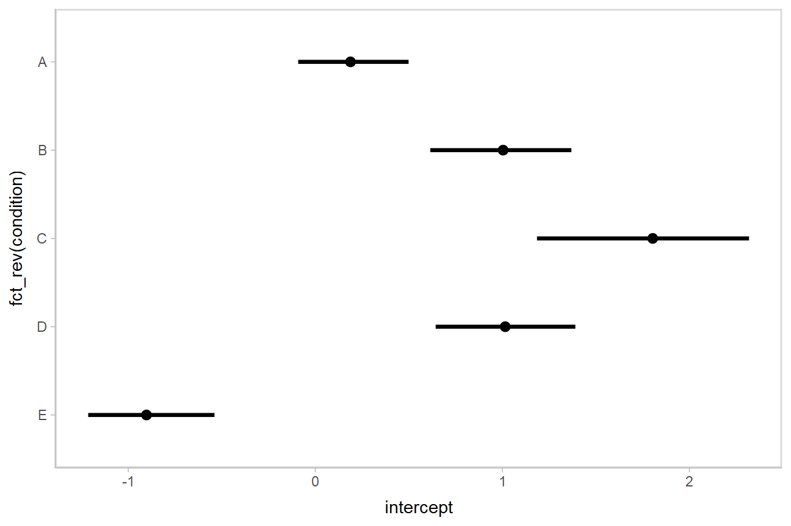
Using stat_pointinterval/stat_pointintervalh
Rather than summarizing the posterior before calling ggplot, we could also use stat_pointinterval() or stat_pointintervalh() to perform the summary within ggplot:
m %>% spread_draws(intercept[condition]) %>% ggplot(aes(y = fct_rev(condition), x = intercept)) + stat_pointintervalh()
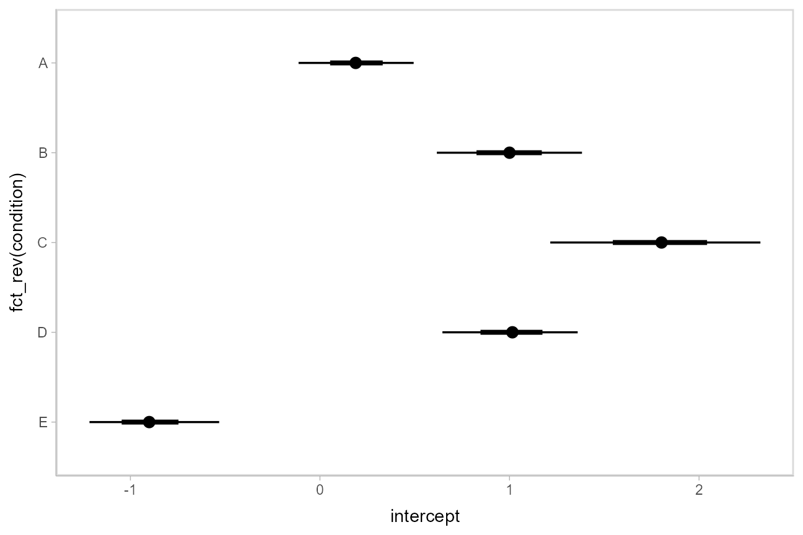
These functions have .width = c(.66, .95) by default (showing 66% and 95% intervals), but this can be changed by passing a .width argument to stat_pointinterval() / stat_pointintervalh().
Intervals with posterior violins (“eye plots”): stat_eye() and stat_eyeh()
The stat_eye() and stat_eyeh() geoms provide a shortcut to generating “eye plots” (combinations of intervals and densities, drawn as violin plots):
m %>% spread_draws(intercept[condition]) %>% ggplot(aes(y = fct_rev(condition), x = intercept)) + stat_eyeh()
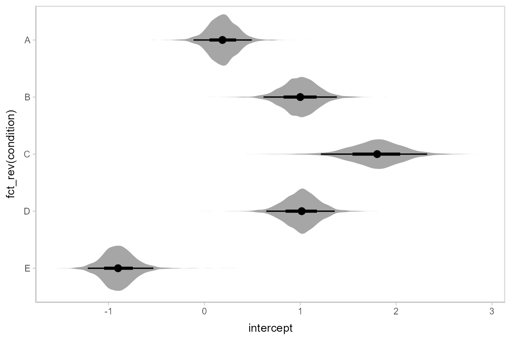
Intervals with posterior densities (“half-eye plots”): stat_halfeyeh()
If you prefer densities over violins, you can use stat_halfeyeh(). This example also demonstrates how to change the interval probability (here, to 90% and 50% intervals):
m %>% spread_draws(intercept[condition]) %>% ggplot(aes(y = fct_rev(condition), x = intercept)) + stat_halfeyeh(.width = c(.90, .5))
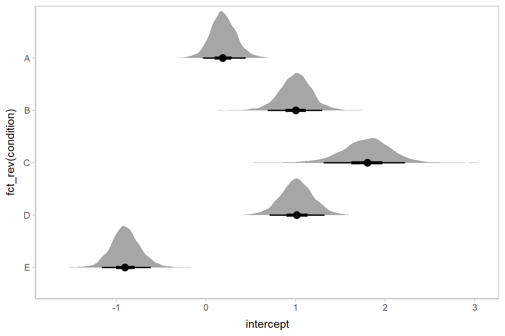
Or say you want to annotate portions of the densities in color; the fill aesthetic can vary within a slab in all geoms and stats in the geom_slabinterval() family, including stat_halfeyeh(). For example, if you want to annotate a domain-specific region of practical equivalence (ROPE), you could do something like this:
m %>% spread_draws(intercept[condition]) %>% ggplot(aes(y = fct_rev(condition), x = intercept, fill = stat(abs(x) < .8))) + stat_halfeyeh() + geom_vline(xintercept = c(-.8, .8), linetype = "dashed") + scale_fill_manual(values = c("gray80", "skyblue"))
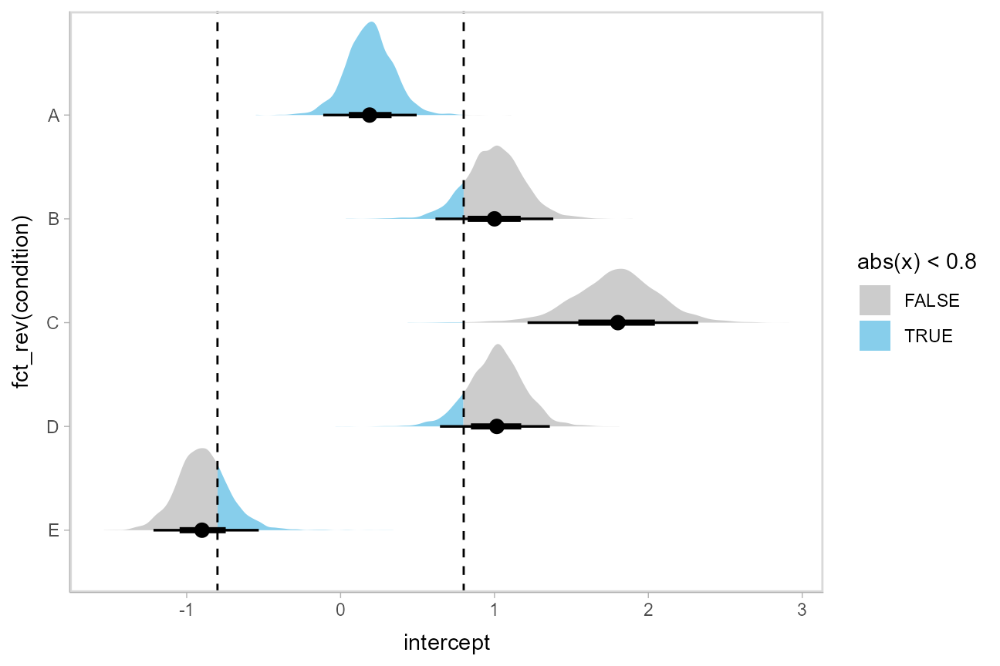
Other visualizations of distributions: stat_slabinterval()
There are a variety of additional stats for visualizing distributions in the geom_slabinterval() family of stats and geoms:

See vignette("slabinterval", package = "tidybayes") for an overview.
Plotting posteriors as quantile dotplots
Intervals are nice if the alpha level happens to line up with whatever decision you are trying to make, but getting a shape of the posterior is better (hence eye plots, above). On the other hand, making inferences from density plots is imprecise (estimating the area of one shape as a proportion of another is a hard perceptual task). Reasoning about probability in frequency formats is easier, motivating quantile dotplots (Kay et al. 2016, Fernandes et al. 2018), which also allow precise estimation of arbitrary intervals (down to the dot resolution of the plot, 100 in the example below).
Within the slabinterval family of geoms in tidybayes is the dots and dotsinterval family, which automatically determine appropriate bin sizes for dotplots and can calculate quantiles from samples to construct quantile dotplots. stat_dotsh() is the horizontal variant designed for use on samples:
m %>% spread_draws(intercept[condition]) %>% ggplot(aes(x = intercept, y = fct_rev(condition))) + stat_dotsh(quantiles = 100)
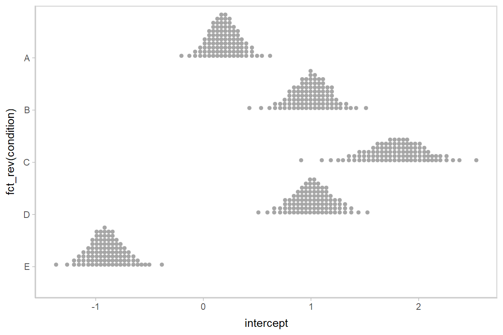
The idea is to get away from thinking about the posterior as indicating one canonical point or interval, but instead to represent it as (say) 100 approximately equally likely points.
Combining variables with different indices in a single tidy format data frame
spread_draws() supports extracting variables that have different indices. It automatically matches up indices with the same name, and duplicates values as necessary to produce one row per all combination of levels of all indices. For example, we might want to calculate the difference between each condition’s intercept and the overall mean. To do that, we can extract draws from the overall mean (mu_condition) and all condition means (intercept[condition]:
m %>% spread_draws(mu_condition, intercept[condition]) %>% head(10)
## # A tibble: 10 x 6
## # Groups: condition [5]
## .chain .iteration .draw mu_condition condition intercept
## <int> <int> <int> <dbl> <fct> <dbl>
## 1 1 1 1 0.434 A 0.0118
## 2 1 1 1 0.434 B 0.910
## 3 1 1 1 0.434 C 1.83
## 4 1 1 1 0.434 D 0.620
## 5 1 1 1 0.434 E -1.07
## 6 1 2 2 0.0649 A 0.318
## 7 1 2 2 0.0649 B 0.789
## 8 1 2 2 0.0649 C 1.22
## 9 1 2 2 0.0649 D 0.788
## 10 1 2 2 0.0649 E -1.24Within each draw, mu_condition is repeated as necessary to correspond to every index of intercept. Thus, dplyr::mutate() can be used to take the differences over all rows, then we can summarize with median_qi():
m %>% spread_draws(mu_condition, intercept[condition]) %>% mutate(condition_offset = intercept - mu_condition) %>% median_qi(condition_offset)
## # A tibble: 5 x 7
## condition condition_offset .lower .upper .width .point .interval
## <fct> <dbl> <dbl> <dbl> <dbl> <chr> <chr>
## 1 A -0.418 -1.62 0.729 0.95 median qi
## 2 B 0.381 -0.826 1.59 0.95 median qi
## 3 C 1.16 -0.00460 2.47 0.95 median qi
## 4 D 0.393 -0.768 1.61 0.95 median qi
## 5 E -1.50 -2.73 -0.322 0.95 median qimedian_qi() uses tidy evaluation (see vignette("tidy-evaluation", package = "rlang")), so it can take column expressions, not just column names. Thus, we can simplify the above example by moving the calculation of condition_mean from mutate() into median_qi():
m %>% spread_draws(mu_condition, intercept[condition]) %>% median_qi(intercept - mu_condition)
## # A tibble: 5 x 7
## condition `intercept - mu_condition` .lower .upper .width .point .interval
## <fct> <dbl> <dbl> <dbl> <dbl> <chr> <chr>
## 1 A -0.418 -1.62 0.729 0.95 median qi
## 2 B 0.381 -0.826 1.59 0.95 median qi
## 3 C 1.16 -0.00460 2.47 0.95 median qi
## 4 D 0.393 -0.768 1.61 0.95 median qi
## 5 E -1.50 -2.73 -0.322 0.95 median qiPosterior fits
Rather than calculating conditional means manually from model parameters, we could use add_fitted_draws, which is analogous to rethinking::link (giving posterior draws from the model’s linear predictor), but uses a tidy data format. We can combine it with modelr::data_grid to first generate a grid describing the fits we want, then transform that grid into a long-format data frame of draws from posterior fits:
ABC %>% data_grid(condition) %>% add_fitted_draws(m) %>% head(10)
## # A tibble: 10 x 4
## # Groups: condition, .row [1]
## condition .row .draw .value
## <fct> <int> <dbl> <dbl>
## 1 A 1 852 0.0518
## 2 A 1 711 0.583
## 3 A 1 538 0.0642
## 4 A 1 76 0.105
## 5 A 1 587 0.178
## 6 A 1 349 0.227
## 7 A 1 865 0.262
## 8 A 1 443 0.468
## 9 A 1 436 0.184
## 10 A 1 567 0.261This approach can be less error-prone if we change the parameterization of the model later, since rethinking will figure out how to calculate the linear predictor for us (rather than us having to do it manually, a calculation which changes depending on the model parameterization).
Then we can plot the output with stat_pointintervalh():
ABC %>% data_grid(condition) %>% add_fitted_draws(m) %>% ggplot(aes(x = .value, y = fct_rev(condition))) + stat_pointintervalh(.width = c(.66, .95))
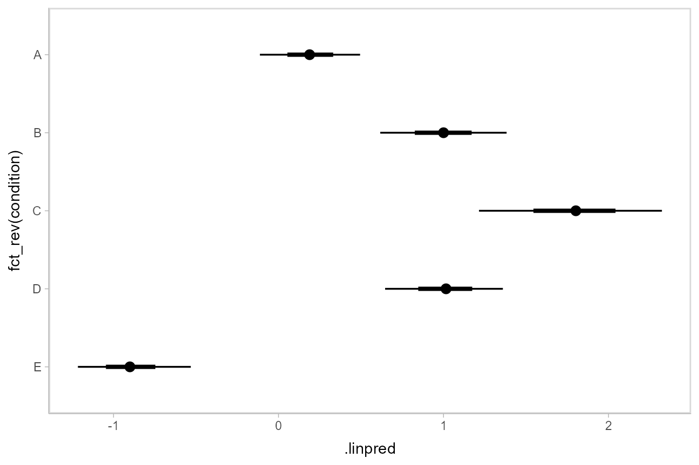
Posterior predictions
Where add_fitted_draws is analogous to rethinking::link(), add_predicted_draws is analogous to rethinking::sim(), giving draws from the posterior predictive distribution.
Here is an example of posterior predictive distributions plotted using stat_slabh():
ABC %>% data_grid(condition) %>% add_predicted_draws(m) %>% ggplot(aes(x = .prediction, y = condition)) + stat_slabh()
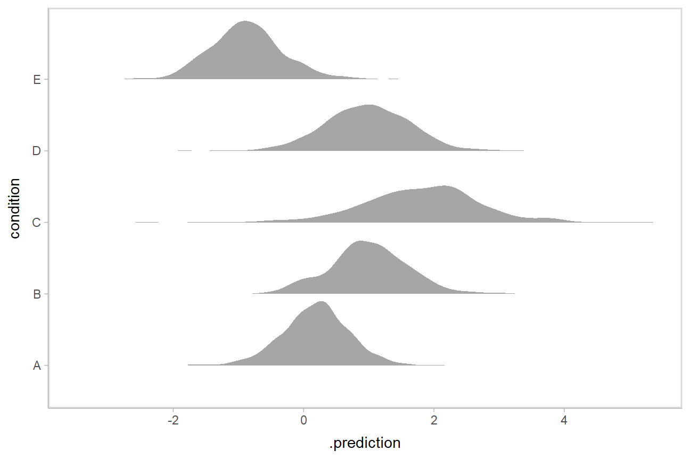
We could also use tidybayes::stat_intervalh() to plot predictive bands alongside the data:
ABC %>% data_grid(condition) %>% add_predicted_draws(m) %>% ggplot(aes(y = condition, x = .prediction)) + stat_intervalh(.width = c(.50, .80, .95, .99)) + geom_point(aes(x = response), data = ABC) + scale_color_brewer()
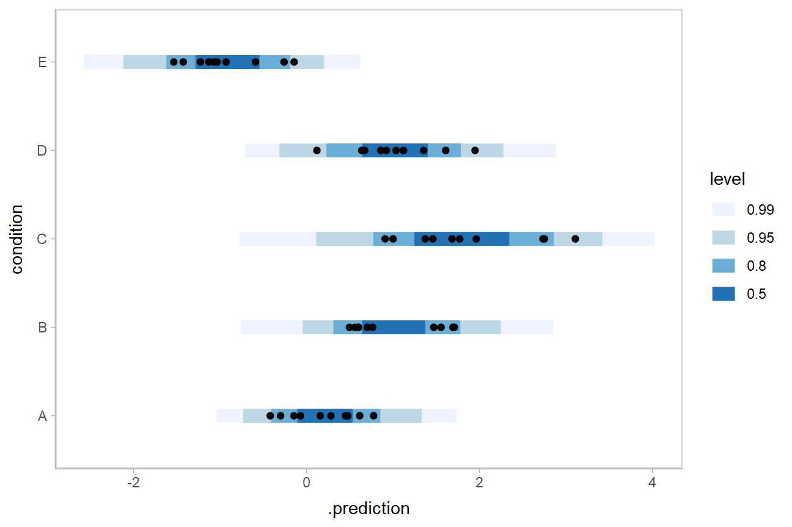
Altogether, data, posterior predictions, and posterior distributions of the means:
grid = ABC %>% data_grid(condition) fits = grid %>% add_fitted_draws(m) preds = grid %>% add_predicted_draws(m) ABC %>% ggplot(aes(y = condition, x = response)) + stat_intervalh(aes(x = .prediction), data = preds) + stat_pointintervalh(aes(x = .value), data = fits, .width = c(.66, .95), position = position_nudge(y = -0.3)) + geom_point() + scale_color_brewer()

Posterior predictions, Kruschke-style
The above approach to posterior predictions integrates over the parameter uncertainty to give a single posterior predictive distribution. Another approach, often used by John Kruschke in his book Doing Bayesian Data Analysis, is to attempt to show both the predictive uncertainty and the parameter uncertainty simultaneously by showing several possible predictive distributions implied by the posterior.
We can do this pretty easily by asking for the distributional parameters for a given prediction implied by the posterior. These are the link-level linear predictors returned by rethinking::link(); in tidybayes we follow the terminology of the brms package and calls these distributional regression parameters. In our model, these are the mu and sigma parameters. We can access these explicitly by setting dpar = c("mu", "sigma") in add_fitted_draws. Rather than specifying the parameters explicitly, you can also just set dpar = TRUE to get draws from all distributional parameters in a model. Then, we can select a small number of draws using tidybyaes::sample_draws() and then use stat_dist_slabh() to visualize each predictive distribution implied by the values of mu and sigma:
ABC %>% data_grid(condition) %>% add_fitted_draws(m, dpar = c("mu", "sigma")) %>% sample_draws(30) %>% ggplot(aes(y = condition)) + stat_dist_slabh(aes(dist = "norm", arg1 = mu, arg2 = sigma), slab_color = "gray65", alpha = 1/10, fill = NA ) + geom_point(aes(x = response), data = ABC, shape = 21, fill = "#9ECAE1", size = 2)
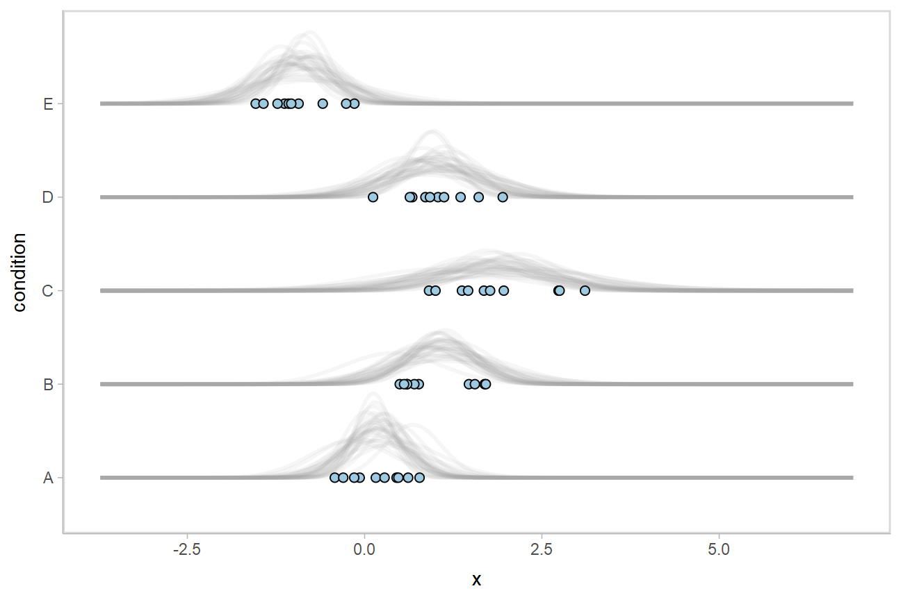
For a more detailed description of these charts (and some useful variations on them), see Solomon Kurz’s excellent blog post on the topic.
We could even combine the Kruschke-style plots of predictive distributions with half-eyes showing the posterior means:
ABC %>% data_grid(condition) %>% add_fitted_draws(m, dpar = c("mu", "sigma")) %>% ggplot(aes(x = condition)) + stat_dist_slab(aes(dist = "norm", arg1 = mu, arg2 = sigma), slab_color = "gray65", alpha = 1/10, fill = NA, data = . %>% sample_draws(30), scale = .5 ) + stat_halfeye(aes(y = .value), side = "bottom", scale = .5) + geom_point(aes(y = response), data = ABC, shape = 21, fill = "#9ECAE1", size = 2, position = position_nudge(x = -.2))
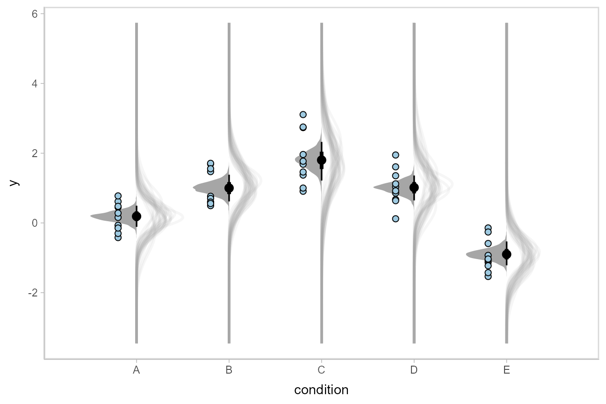
Fit/prediction curves
To demonstrate drawing fit curves with uncertainty, let’s fit a slightly naive model to part of the mtcars dataset. First, we’ll make the cylinder count a factor so that we can index other variables in the model by it:
Then, we’ll fit a naive linear model where cars with different numbers of cylinders each get their own linear relationship between horsepower and miles per gallon:
m_mpg = ulam(alist( mpg ~ normal(mu, sigma), mu <- intercept[cyl] + slope[cyl]*hp, intercept[cyl] ~ normal(20, 10), slope[cyl] ~ normal(0, 10), sigma ~ exponential(1) ), data = mtcars_clean, chains = 4, cores = parallel::detectCores(), iter = 2000 )
We can draw fit curves with probability bands using add_fitted_draws() with tidybayes::stat_lineribbon():
mtcars_clean %>% group_by(cyl) %>% data_grid(hp = seq_range(hp, n = 51)) %>% add_fitted_draws(m_mpg) %>% ggplot(aes(x = hp, y = mpg, color = cyl)) + stat_lineribbon(aes(y = .value)) + geom_point(data = mtcars_clean) + scale_fill_brewer(palette = "Greys") + scale_color_brewer(palette = "Set2")
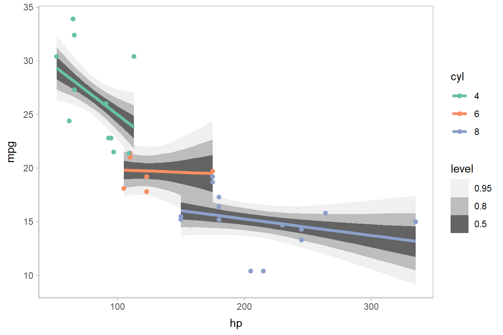
Or we can sample a reasonable number of fit lines (say 100) and overplot them:
mtcars_clean %>% group_by(cyl) %>% data_grid(hp = seq_range(hp, n = 101)) %>% add_fitted_draws(m_mpg, n = 100) %>% ggplot(aes(x = hp, y = mpg, color = cyl)) + geom_line(aes(y = .value, group = paste(cyl, .draw)), alpha = .1) + geom_point(data = mtcars_clean) + scale_color_brewer(palette = "Dark2")
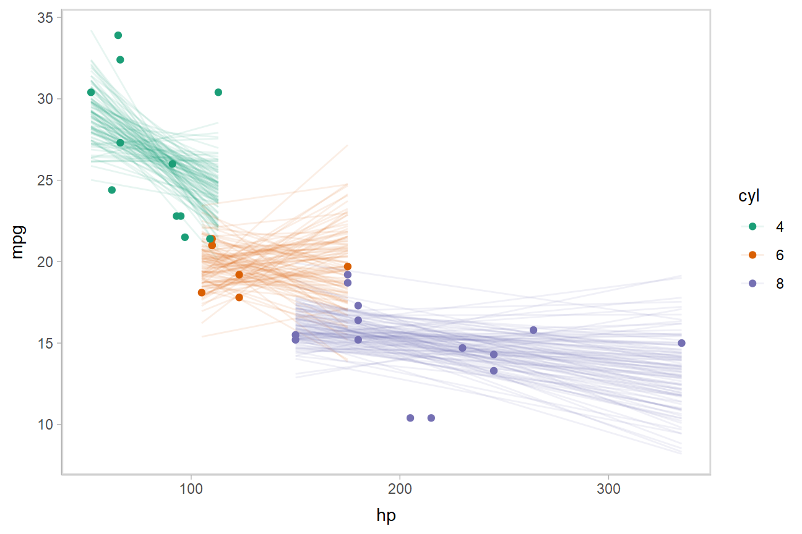
Or we can create animated hypothetical outcome plots (HOPs) of fit lines:
set.seed(123456) # to keep the example small we use 20 frames, # but something like 100 would be better ndraws = 20 p = mtcars_clean %>% group_by(cyl) %>% data_grid(hp = seq_range(hp, n = 101)) %>% add_fitted_draws(m_mpg, n = ndraws) %>% ggplot(aes(x = hp, y = mpg, color = cyl)) + geom_line(aes(y = .value, group = paste(cyl, .draw))) + geom_point(data = mtcars_clean) + scale_color_brewer(palette = "Dark2") + transition_states(.draw, 0, 1) + shadow_mark(future = TRUE, color = "gray50", alpha = 1/20) animate(p, nframes = ndraws, fps = 2.5, width = 432, height = 288, res = 96, dev = "png", type = "cairo")
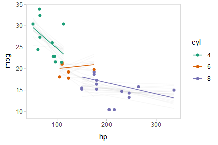
Or, for posterior predictions (instead of fits), we can go back to probability bands:
mtcars_clean %>% group_by(cyl) %>% data_grid(hp = seq_range(hp, n = 101)) %>% add_predicted_draws(m_mpg) %>% ggplot(aes(x = hp, y = mpg, color = cyl, fill = cyl)) + stat_lineribbon(aes(y = .prediction), .width = c(.95, .80, .50), alpha = 1/4) + geom_point(data = mtcars_clean) + scale_fill_brewer(palette = "Set2") + scale_color_brewer(palette = "Dark2")
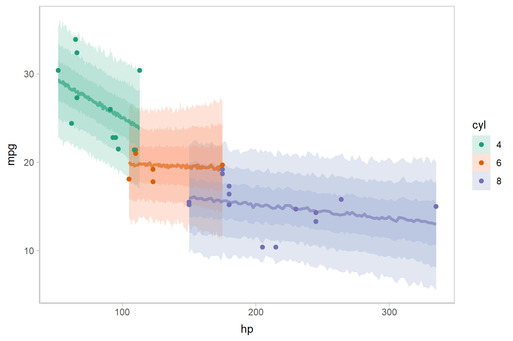
This gets difficult to judge by group, so probably better to facet into multiple plots. Fortunately, since we are using ggplot, that functionality is built in:
mtcars_clean %>% group_by(cyl) %>% data_grid(hp = seq_range(hp, n = 101)) %>% add_predicted_draws(m_mpg) %>% ggplot(aes(x = hp, y = mpg)) + stat_lineribbon(aes(y = .prediction), .width = c(.95, .8, .5), color = brewer.pal(5, "Blues")[[5]]) + geom_point(data = mtcars_clean) + scale_fill_brewer() + facet_grid(. ~ cyl, space = "free_x", scales = "free_x")
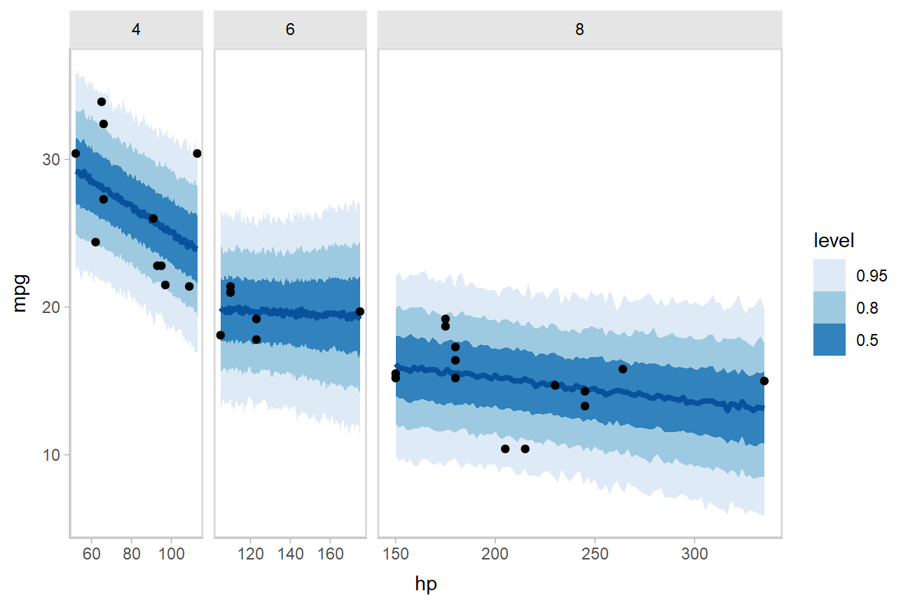
Comparing levels of a factor
If we wish compare the means from each condition, tidybayes::compare_levels() facilitates comparisons of the value of some variable across levels of a factor. By default it computes all pairwise differences.
Let’s demonstrate tidybayes::compare_levels() with another plotting geom, tidybayes::stat_halfeyeh(), which gives horizontal “half-eye” plots, combining intervals with a density plot:
#N.B. the syntax for compare_levels is experimental and may change m %>% spread_draws(intercept[condition]) %>% compare_levels(intercept, by = condition) %>% ggplot(aes(y = condition, x = intercept)) + stat_halfeyeh()
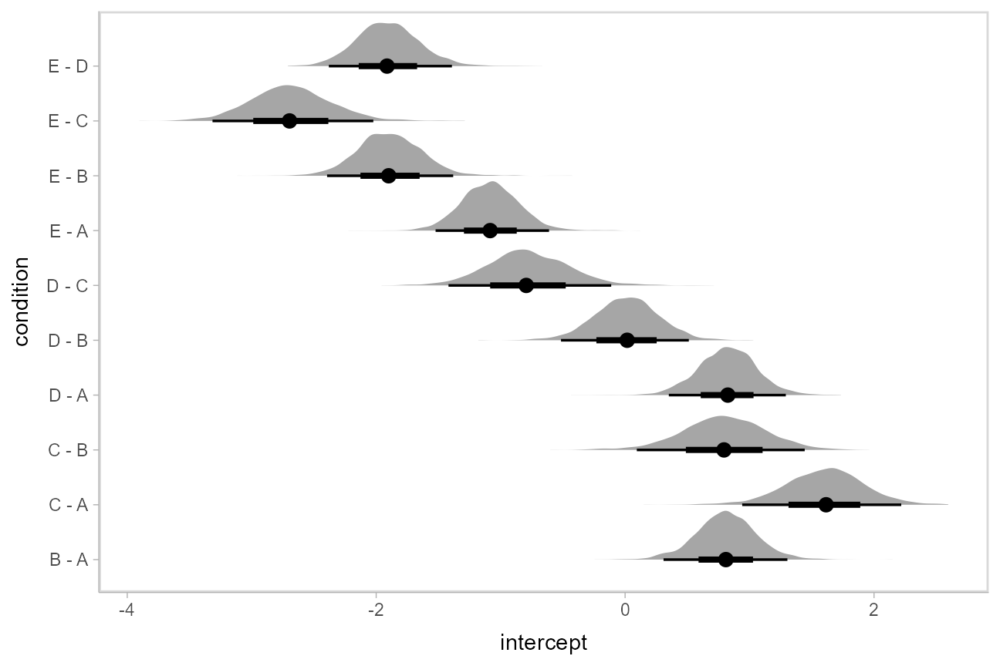
If you prefer “caterpillar” plots, ordered by something like the mean of the difference, you can reorder the factor before plotting:
#N.B. the syntax for compare_levels is experimental and may change m %>% spread_draws(intercept[condition]) %>% compare_levels(intercept, by = condition) %>% ungroup() %>% mutate(condition = reorder(condition, intercept)) %>% ggplot(aes(y = condition, x = intercept)) + stat_halfeyeh() + geom_vline(xintercept = 0, linetype = "dashed")
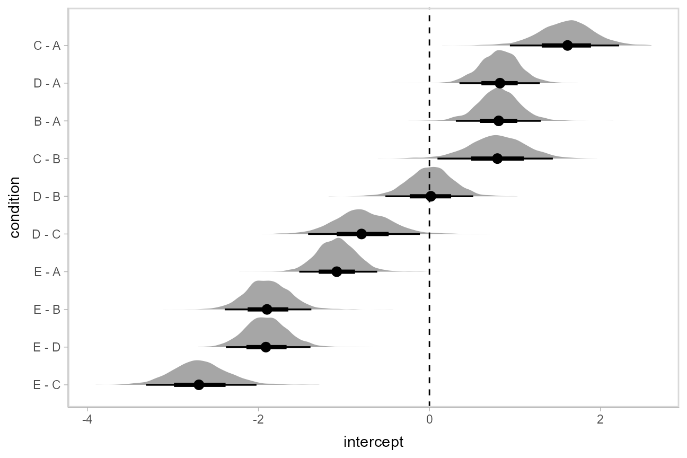
Ordinal models
The rethinking::link() function for ordinal models returns draws from the latent linear predictor (in contrast to the brms::fitted.brmsfit function for ordinal and multinomial regression models in brms, which returns multiple variables for each draw: one for each outcome category, see the ordinal regression examples in vignette("tidy-brms", package = "tidybayes")). The philosophy of tidybayes is to tidy whatever format is output by a model, so in keeping with that philosophy, when applied to ordinal rethinking models, add_fitted_draws simply returns draws from the latent linear predictor. This means we have to do a bit more work to recover category probabilities.
Ordinal model with continuous predictor
We’ll fit a model using the mtcars dataset that predicts the number of cylinders in a car given the car’s mileage (in miles per gallon). While this is a little backwards causality-wise (presumably the number of cylinders causes the mileage, if anything), that does not mean this is not a fine prediction task (I could probably tell someone who knows something about cars the MPG of a car and they could do reasonably well at guessing the number of cylinders in the engine). Here’s a simple ordinal regression model:
m_cyl = ulam(alist( cyl ~ dordlogit(phi, cutpoint), phi <- b_mpg*mpg, b_mpg ~ student_t(3, 0, 10), cutpoint ~ student_t(3, 0, 10) ), data = mtcars_clean, chains = 4, cores = parallel::detectCores(), iter = 2000 )
Here is a plot of the link-level fit:
mtcars_clean %>% data_grid(mpg = seq_range(mpg, n = 101)) %>% add_fitted_draws(m_cyl) %>% ggplot(aes(x = mpg, y = .value)) + stat_lineribbon(color = "red") + scale_fill_brewer(palette = "Greys")
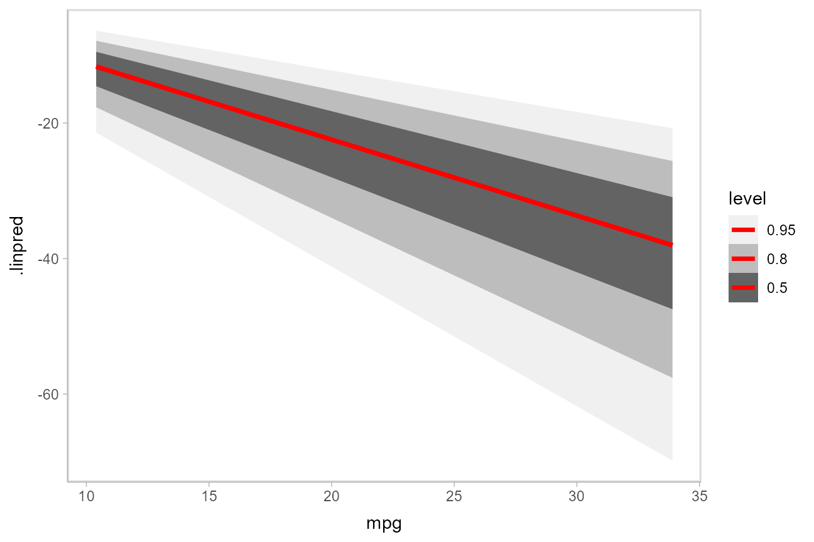
This can be hard to interpret. To turn this into predicted probabilities on a per-category basis, we have to use the fact that an ordinal logistic regression defines the probability of an outcome in category \(j\) or less as:
\[ \textrm{logit}\left[Pr(Y\le j)\right] = \textrm{cutpoint}_j - \beta x \]
Thus, the probability of category \(j\) is:
\[ \begin{align} Pr(Y = j) &= Pr(Y \le j) - Pr(Y \le j - 1)\\ &= \textrm{logit}^{-1}(\textrm{cutpoint}_j - \beta x) - \textrm{logit}^{-1}(\textrm{cutpoint}_{j-1} - \beta x) \end{align} \] To derive these values, we need two things:
The \(\textrm{cutpoint}_j\) values. These are threshold parameters fitted by the model. For convenience, if there are \(k\) levels, we will take \(\textrm{cutpoint}_k = +\infty\), since the probability of being in the top level or below it is 1.
The \(\beta x\) values. These are just the
.valuecolumn returned byadd_fitted_draws().
The cutpoints in this model are defined by the cutpoints[j] parameters. We can We can see those parameters in the list of variables in the model:
get_variables(m_cyl)
## [1] "b_mpg" "cutpoint[1]" "cutpoint[2]" "lp__"
## [5] "accept_stat__" "stepsize__" "treedepth__" "n_leapfrog__"
## [9] "divergent__" "energy__"cutpoints = m_cyl %>% recover_types(mtcars_clean) %>% spread_draws(cutpoint[cyl]) # define the last cutpoint last_cutpoint = tibble( .draw = 1:max(cutpoints$.draw), cyl = "8", cutpoint = Inf ) cutpoints = bind_rows(cutpoints, last_cutpoint) %>% # define the previous cutpoint (cutpoint_{j-1}) group_by(.draw) %>% arrange(cyl) %>% mutate(prev_cutpoint = lag(cutpoint, default = -Inf)) # the resulting cutpoints look like this: cutpoints %>% group_by(cyl) %>% median_qi(cutpoint, prev_cutpoint)
## # A tibble: 3 x 10
## cyl cutpoint cutpoint.lower cutpoint.upper prev_cutpoint prev_cutpoint.l~
## <chr> <dbl> <dbl> <dbl> <dbl> <dbl>
## 1 4 -24.3 -42.4 -13.3 -Inf -Inf
## 2 6 -20.4 -36.2 -11.2 -24.3 -42.4
## 3 8 Inf Inf Inf -20.4 -36.2
## # ... with 4 more variables: prev_cutpoint.upper <dbl>, .width <dbl>,
## # .point <chr>, .interval <chr>Given the data frame of cutpoints and the latent linear predictor, we can more-or-less directly write the formula for the probability of each category conditional on mpg into our code:
fitted_cyl_probs = mtcars_clean %>% data_grid(mpg = seq_range(mpg, n = 101)) %>% add_fitted_draws(m_cyl) %>% inner_join(cutpoints, by = ".draw") %>% mutate(`P(cyl | mpg)` = # this part is logit^-1(cutpoint_j - beta*x) - logit^-1(cutpoint_{j-1} - beta*x) plogis(cutpoint - .value) - plogis(prev_cutpoint - .value) ) fitted_cyl_probs %>% head(10)
## # A tibble: 10 x 10
## # Groups: mpg, .row [1]
## mpg .row .draw .value cyl cutpoint .chain .iteration prev_cutpoint
## <dbl> <int> <dbl> <dbl> <chr> <dbl> <int> <int> <dbl>
## 1 10.4 1 587 -11.8 4 -25.2 1 587 -Inf
## 2 10.4 1 587 -11.8 6 -20.0 1 587 -25.2
## 3 10.4 1 587 -11.8 8 Inf NA NA -20.0
## 4 10.4 1 142 -15.3 4 -30.7 1 142 -Inf
## 5 10.4 1 142 -15.3 6 -27.1 1 142 -30.7
## 6 10.4 1 142 -15.3 8 Inf NA NA -27.1
## 7 10.4 1 223 -12.6 4 -25.9 1 223 -Inf
## 8 10.4 1 223 -12.6 6 -21.6 1 223 -25.9
## 9 10.4 1 223 -12.6 8 Inf NA NA -21.6
## 10 10.4 1 491 -12.1 4 -25.2 1 491 -Inf
## # ... with 1 more variable: `P(cyl | mpg)` <dbl>Then we can plot those probability curves against the datset:
data_plot = mtcars_clean %>% ggplot(aes(x = mpg, y = cyl, color = cyl)) + geom_point() + scale_color_brewer(palette = "Dark2", name = "cyl") fit_plot = fitted_cyl_probs %>% ggplot(aes(x = mpg, y = `P(cyl | mpg)`, color = cyl)) + stat_lineribbon(aes(fill = cyl), alpha = 1/5) + scale_color_brewer(palette = "Dark2") + scale_fill_brewer(palette = "Dark2") plot_grid(ncol = 1, align = "v", data_plot, fit_plot )
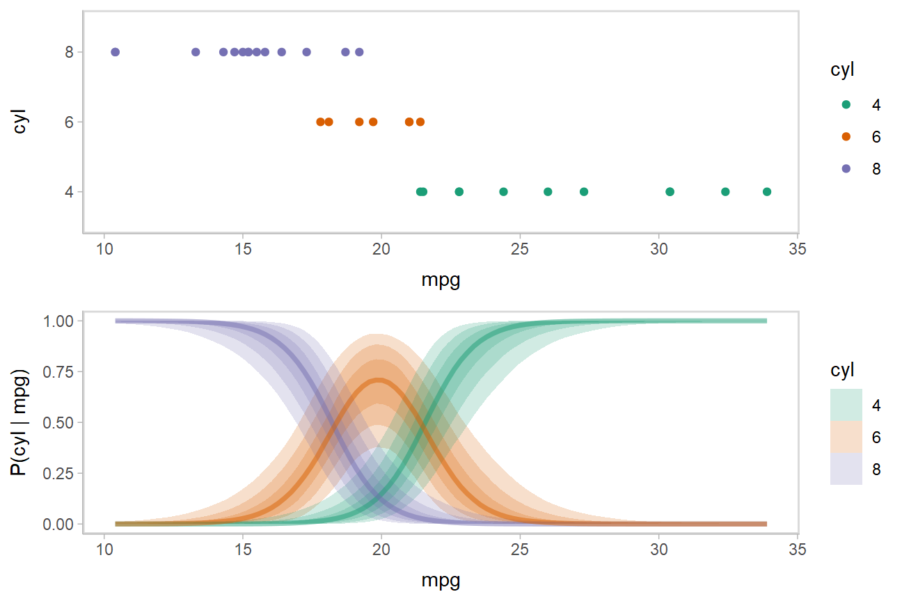
The above display does not let you see the correlation between P(cyl|mpg) for different values of cyl at a particular value of mpg. For example, in the portion of the posterior where P(cyl = 6|mpg = 20) is high, P(cyl = 4|mpg = 20) and P(cyl = 8|mpg = 20) must be low (since these must add up to 1).
One way to see this correlation might be to employ hypothetical outcome plots (HOPs) just for the fit line, “detaching” it from the ribbon (another alternative would be to use HOPs on top of line ensembles, as demonstrated earlier in this document). By employing animation, you can see how the lines move in tandem or opposition to each other, revealing some patterns in how they are correlated:
ndraws = 100 p = fitted_cyl_probs %>% ggplot(aes(x = mpg, y = `P(cyl | mpg)`, color = cyl)) + # we remove the `.draw` column from the data for stat_lineribbon so that the same ribbons # are drawn on every frame (since we use .draw to determine the transitions below) stat_lineribbon(aes(fill = cyl), alpha = 1/5, color = NA, data = . %>% select(-.draw)) + # we use sample_draws to subsample at the level of geom_line (rather than for the full dataset # as in previous HOPs examples) because we need the full set of draws for stat_lineribbon above geom_line(aes(group = paste(.draw, cyl)), size = 1, data = . %>% sample_draws(ndraws)) + scale_color_brewer(palette = "Dark2") + scale_fill_brewer(palette = "Dark2") + transition_manual(.draw) animate(p, nframes = ndraws, fps = 2.5, width = 576, height = 192, res = 96, dev = "png", type = "cairo")
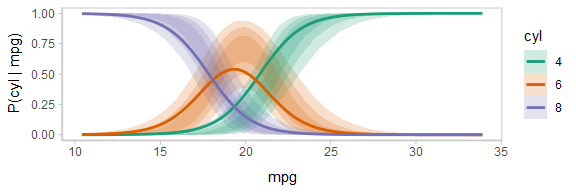
Notice how the lines move together, and how they move up or down together or in opposition due to their correlation.
While talking about the mean for an ordinal distribution often does not make sense, in this particular case one could argue that the expected number of cylinders for a car given its miles per gallon is a meaningful quantity. We could plot the posterior distribution for the average number of cylinders for a car given a particular miles per gallon as follows:
\[ \textrm{E}[\textrm{cyl}|\textrm{mpg}=m] = \sum_{c \in \{4,6,8\}} c\cdot \textrm{P}(\textrm{cyl}=c|\textrm{mpg}=m) \]
We can use the above formula to derive a posterior distribution for \(\textrm{E}[\textrm{cyl}|\textrm{mpg}=m]\) from the model. The fitted_cyl_probs data frame above gives us the posterior distribution for \(\textrm{P}(\textrm{cyl}=c|\textrm{mpg}=m)\). Thus, we can group within .draw and then use summarise to calculate the expected value:
label_data_function = . %>% ungroup() %>% filter(mpg == quantile(mpg, .47)) %>% summarise_if(is.numeric, mean) data_plot_with_mean = fitted_cyl_probs %>% sample_draws(100) %>% # convert cylinder values back into numbers mutate(cyl = as.numeric(as.character(cyl))) %>% group_by(mpg, .draw) %>% # calculate expected cylinder value summarise(cyl = sum(cyl * `P(cyl | mpg)`)) %>% ggplot(aes(x = mpg, y = cyl)) + geom_line(aes(group = .draw), alpha = 5/100) + geom_point(aes(y = as.numeric(as.character(cyl)), fill = cyl), data = mtcars_clean, shape = 21, size = 2) + geom_text(aes(x = mpg + 4), label = "E[cyl | mpg]", data = label_data_function, hjust = 0) + geom_segment(aes(yend = cyl, xend = mpg + 3.9), data = label_data_function) + scale_fill_brewer(palette = "Set2", name = "cyl")
## `summarise()` regrouping output by 'mpg' (override with `.groups` argument)plot_grid(ncol = 1, align = "v", data_plot_with_mean, fit_plot )
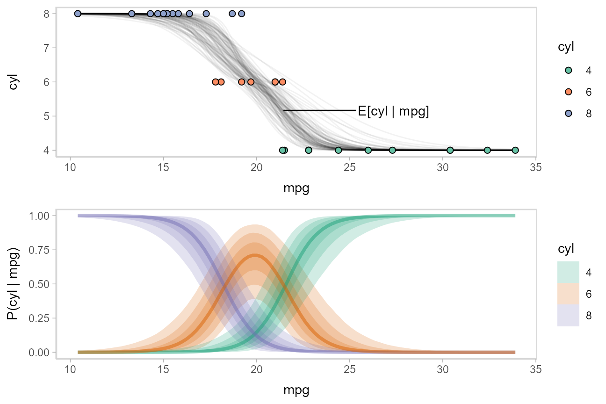
Now let’s do some posterior predictive checking: do posterior predictions look like the data? For this, we’ll make new predictions at the same values of mpg as were present in the original dataset (gray circles) and plot these with the observed data (colored circles):
mtcars_clean %>% # we use `select` instead of `data_grid` here because we want to make posterior predictions # for exactly the same set of observations we have in the original data select(mpg) %>% add_predicted_draws(m_cyl, seed = 1234) %>% # recover original factor labels mutate(cyl = levels(mtcars_clean$cyl)[.prediction]) %>% ggplot(aes(x = mpg, y = cyl)) + geom_count(color = "gray75") + geom_point(aes(fill = cyl), data = mtcars_clean, shape = 21, size = 2) + scale_fill_brewer(palette = "Dark2") + geom_label_repel( data = . %>% ungroup() %>% filter(cyl == "8") %>% filter(mpg == max(mpg)) %>% dplyr::slice(1), label = "posterior predictions", xlim = c(26, NA), ylim = c(NA, 2.8), point.padding = 0.3, label.size = NA, color = "gray50", segment.color = "gray75" ) + geom_label_repel( data = mtcars_clean %>% filter(cyl == "6") %>% filter(mpg == max(mpg)) %>% dplyr::slice(1), label = "observed data", xlim = c(26, NA), ylim = c(2.2, NA), point.padding = 0.2, label.size = NA, segment.color = "gray35" )

This doesn’t look too bad — tails might be a bit long. Let’s check using another typical posterior predictive checking plot: many simulated distributions of the response (cyl) against the observed distribution of the response. For a continuous response variable this is usually done with a density plot; here, we’ll plot the number of posterior predictions in each bin as a line plot, since the response variable is discrete:
mtcars_clean %>% select(mpg) %>% add_predicted_draws(m_cyl, n = 100, seed = 12345) %>% # recover original factor labels mutate(cyl = levels(mtcars_clean$cyl)[.prediction]) %>% ggplot(aes(x = cyl)) + stat_count(aes(group = NA), geom = "line", data = mtcars_clean, color = "red", size = 3, alpha = .5) + stat_count(aes(group = .draw), geom = "line", position = "identity", alpha = .05) + geom_label(data = data.frame(cyl = "4"), y = 9.5, label = "posterior\npredictions", hjust = 1, color = "gray50", lineheight = 1, label.size = NA) + geom_label(data = data.frame(cyl = "8"), y = 14, label = "observed\ndata", hjust = 0, color = "red", lineheight = 1, label.size = NA)
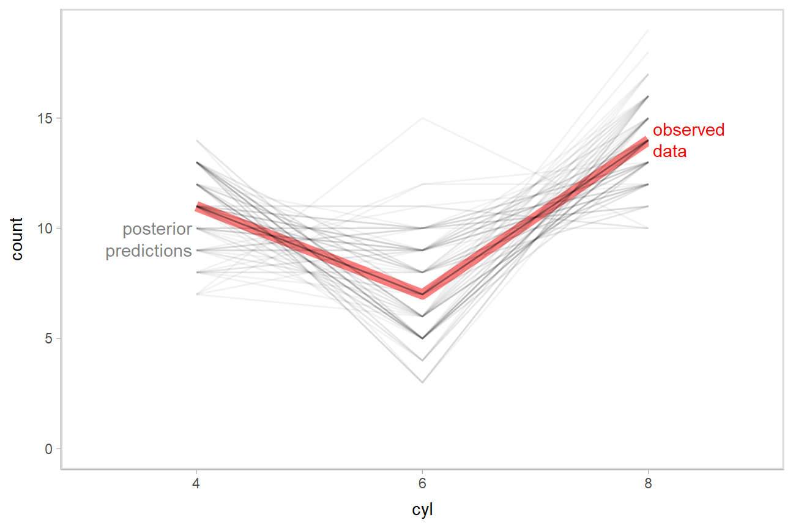
This also looks good.
Another way to look at these posterior predictions might be as a scatterplot matrix. tidybayes::gather_pairs() makes it easy to generate long-format data frames suitable for creating custom scatterplot matrices (or really, arbitrary matrix-style small multiples plots) in ggplot using facet_grid():
set.seed(12345) mtcars_clean %>% select(mpg) %>% add_predicted_draws(m_cyl) %>% # recover original factor labels. Must ungroup first so that the # factor is created in the same way in all groups; this is a workaround # because brms no longer returns labelled predictions (hopefully that # is fixed then this will no longer be necessary) ungroup() %>% mutate(cyl = factor(levels(mtcars_clean$cyl)[.prediction])) %>% # need .drop = FALSE to ensure 0 counts are not dropped group_by(.draw, .drop = FALSE) %>% count(cyl) %>% gather_pairs(cyl, n) %>% ggplot(aes(.x, .y)) + geom_count(color = "gray75") + geom_point(data = mtcars_clean %>% count(cyl) %>% gather_pairs(cyl, n), color = "red") + facet_grid(vars(.row), vars(.col)) + xlab("Number of observations with cyl = col") + ylab("Number of observations with cyl = row")
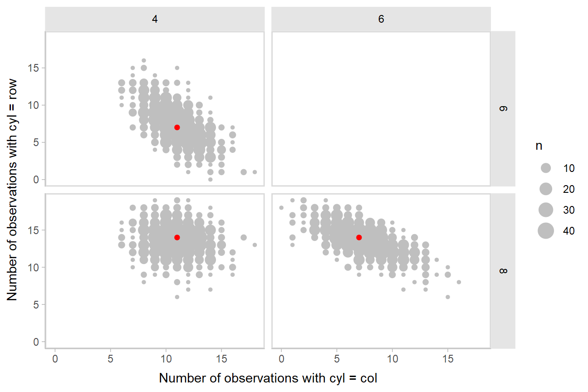